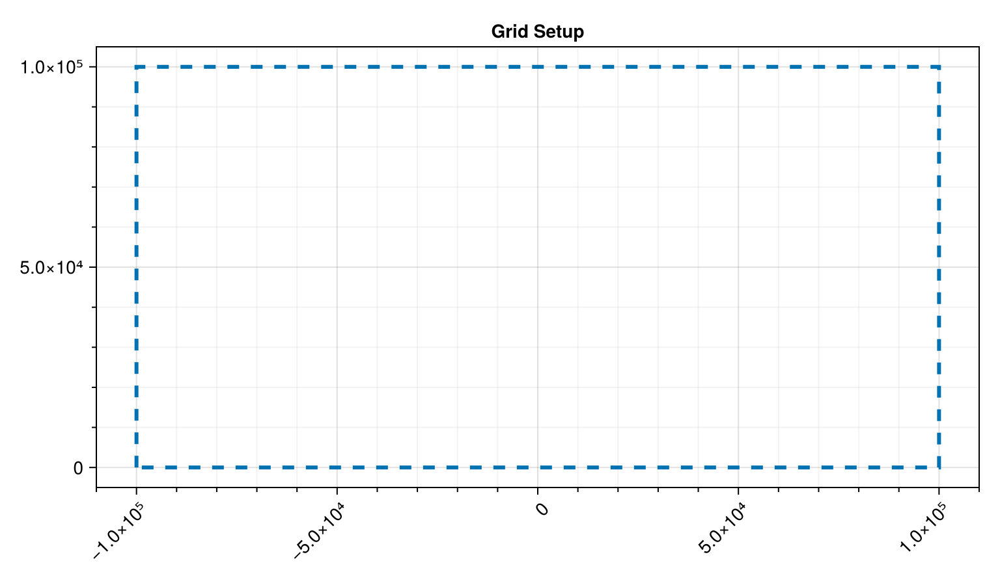
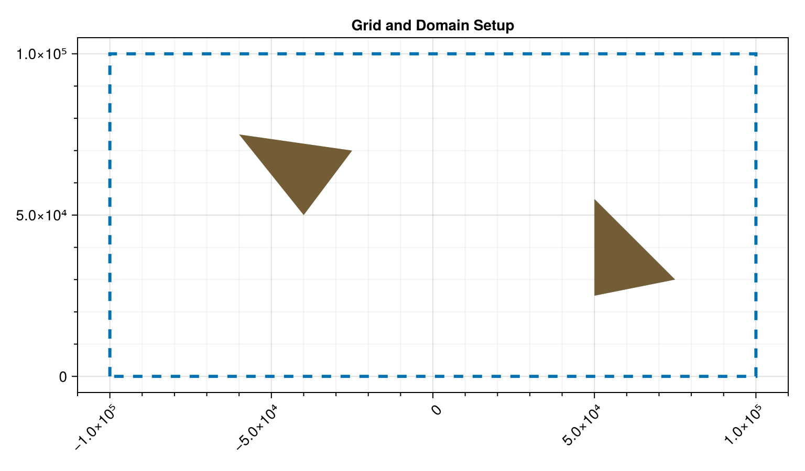
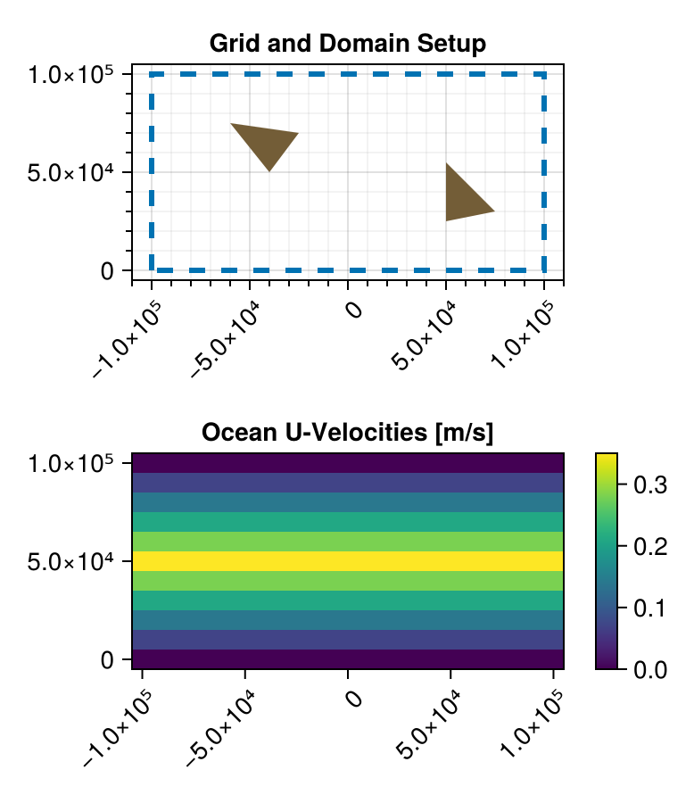
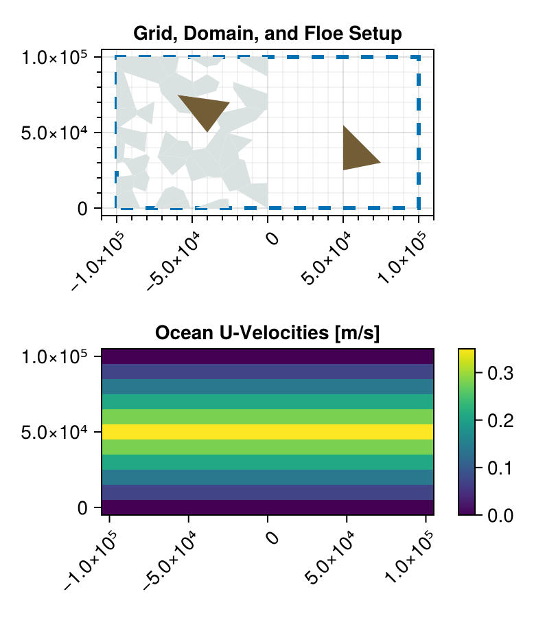

Tutorial
This is the user tutorial for Subzero.jl. It will walk you through the typical workflow of buidling a discrete-element model (DEM) with Subzero.jl as well as running and plotting your simulatuion.
Core ideas behind Subzero.jl simulations
The very first step of running a Subzero simulation is to bring the package into scope.
using Subzero # bring Subzero into scope
using CairoMakie, GeoInterfaceMakie # bring plotting packages into scope
import GeoInterface as GI
using Random, LoggingCreating a Grid
Each Subzero model requires a grid object. The grid object defines the grid for the ocean and atmosphere. Ocean and atmosphere vectors (like u and v velocities) and tracers (like temperature) are recorded on these grid points and grid lines. The grid points are then used for interpolation for coupling between the ice, ocean, and atmosphere.
All Subzero grid objects are concrete types of the abstract type AbstractRectilinearGrid. Right now, all grid objects must be Rectilinear. Currently the only implemented concrete type is a RegRectilinearGrid. If you are interested in implementing another type of grid, see the developer documentation.
Here, we will go ahead and create an instance of RegRectilinearGrid. We need to specify the grid endpoints and either the number of grid cells in both directions, or the size of the grid cells. Here we will specity the number of grid cells in the x-direction, Nx, and in the y-direction, Ny.
grid = RegRectilinearGrid(; x0 = -1e5, xf = 1e5, y0 = 0.0, yf = 1e5, Nx = 20, Ny = 10)RegRectilinearGrid{Float64}
⊢x extent (-100000.0 to 100000.0) with 20 grid cells of size 10000.0 m
∟y extent (0.0 to 100000.0) with 10 grid cells of size 10000.0 mWe plot a dashed box around the grid so that we can see the that the grid matches the extent given. We also place tick-marks at the desired grid cell lengths. Finally, set the plot's aspect ration to 2 as the x-extent is two-times larger than the y-extent.
fig = Figure();
ax1 = Axis(fig[1, 1]; # set up axis tick marks to match grid cells
title = "Grid Setup",
xticks = range(grid.x0, grid.xf, 5), xminorticks = IntervalsBetween(5),
xminorticksvisible = true, xminorgridvisible = true, xticklabelrotation = pi/4,
yticks = range(grid.y0, grid.yf, 3), yminorticks = IntervalsBetween(5),
yminorticksvisible = true, yminorgridvisible = true,
)
lines!( # plot boundary of grid with a dashed line
[grid.x0, grid.x0, grid.xf, grid.xf, grid.x0], # point x-values
[grid.y0, grid.yf, grid.yf, grid.y0, grid.y0]; # point y-values
linestyle = :dash, linewidth = 3.0)MakieCore.Lines{Tuple{Vector{GeometryBasics.Point{2, Float64}}}}Resize grid to layout
colsize!(fig.layout, 1, Aspect(1, 2))
resize_to_layout!(fig)
fig # display the figure
Creating Boundaries
Next, each Subzero.jl model needs a Domain. A Domain defines the region of the grid that the ice floes are allowed in, what happens to them when they reach the boundaries of that region, and if there is any topography in the model, along with the ice, in that region.
Similarly to the grid above, the Domain will be rectilinear, defined by four boundaries, one for each of the cardinal direction. You will be able to pass each of the cardinal directions (North, South, East, and West), defined as types by Subzero, to the boundary constructors. Each boundary can have different behavior, allowing the user to create a wide variety of domain behavior. Right now, four types of AbstractBoundaries are implemented: OpenBoundary, PeriodicBoundary, CollisionBoundary, and MovingBoundary.
In this example, we will use two CollisionBoundary walls and two PeriodicBoundary walls to create a channel that the ice can infinitly flow through, from the east back to the west. In the north and the south, the ice will collide with the boundaries, as if there was shoreline preventing it from leaving the channel.
We will use the grid we made above to define the boundaries so that they exactly border the grid.
north_bound = CollisionBoundary(North; grid)
south_bound = CollisionBoundary(South; grid)
east_bound = PeriodicBoundary(East; grid)
west_bound = PeriodicBoundary(West; grid)PeriodicBoundary{West, Float64}
⊢polygon points are defined by the following set: (-100000.0, 150000.0), (-100000.0, -50000.0), (-200000.0, 150000.0), (-200000.0, -50000.0)
∟val is -100000.0If we plot the polygons that are created within each boundary object, we can see that they border the grid. These polygons are how we well when the ice floes are interacting with each of the boundaries. We can also see that the boundaries overlap in the corners to ensure there is a solid border around the grid. The PeriodicBoundary elements are in purple while the CollisionBoundary elements are in teal.
poly!( # plot each of the boundaries with a 50% transparent color so we can see the overlap
[north_bound.poly, south_bound.poly, east_bound.poly, west_bound.poly];
color = [(:purple, 0.5), (:purple, 0.5), (:teal, 0.5), (:teal, 0.5)],
)
ax1.title = "Grid and Boundary Setup"
fig # display the figureCreating Topography
We then have the option to add in a TopographyField, which is a collection of TopographyElements. If we want to add in topography field, we can create one using the initialize_topography_field function. Here we will create two islands in the channel. For simplcity, both will be triangles. I create the polygons that define the shape of each island using GeoInterface and defining the points with tuples:
island1 = GI.Polygon([[(-6e4, 7.5e4), (-4e4, 5e4), (-2.5e4, 7e4), (-6e4, 7.5e4)]])
island2 = GI.Polygon([[(5e4, 2.5e4), (5e4, 5.5e4), (7.5e4, 3e4), (5e4, 2.5e4)]])
topo_list = [island1, island2]2-element Vector{GeoInterface.Wrappers.Polygon{false, false, Vector{GeoInterface.Wrappers.LinearRing{false, false, Vector{Tuple{Float64, Float64}}, Nothing, Nothing}}, Nothing, Nothing}}:
GeoInterface.Wrappers.Polygon{false, false}([GeoInterface.Wrappers.LinearRing([(-60000.0, 75000.0), … (2) … , (-60000.0, 75000.0)])])
GeoInterface.Wrappers.Polygon{false, false}([GeoInterface.Wrappers.LinearRing([(50000.0, 25000.0), … (2) … , (50000.0, 25000.0)])])We can then pass these to initialize_topography_field with the polys keyword. We could also have defined them just by their coordinates and passed in the coordiantes by the coords keyword.
topo_field = initialize_topography_field(; polys = topo_list)2-element TopographyField{Float64} list:
TopographyElement{Float64}
⊢centroid is (-41666.66667, 65000.0) in meters
∟maximum radius is 20883.27348 meters
TopographyElement{Float64}
⊢centroid is (58333.33333, 36666.66667) in meters
∟maximum radius is 20138.40996 metersWe can now plot the topography within the domain.
topo_color = RGBf(115/255, 93/255, 55/255) # brown color for topography
poly!(topo_field.poly; color = topo_color) # plot the topography
ax1.title = "Grid and Domain Setup"
fig # display the figure
Creating a Domian
We now have all of the pieces needed to create a Domain. We will combine the four (4) boundaries we created, and the topography, into one Domain object. The collection of boundaries and topography define where the floes can and cannot go in the simulation and add in boundary behavior.We can do that as follows:
domain = Domain(; north = north_bound, south = south_bound, east = east_bound, west = west_bound, topography = topo_field)Domain
⊢Northern boundary of type CollisionBoundary{North, Float64}
⊢Southern boundary of type CollisionBoundary{South, Float64}
⊢Eastern boundary of type PeriodicBoundary{East, Float64}
⊢Western boundary of type PeriodicBoundary{West, Float64}
∟2-element TopograpahyElement{Float64} listWe could have skipped adding the topography to the domain. That is an optional keyword and an empty topography field will be automatically created if the user does not provide one.
At this point, we have already plotted all of the Domain objects, so we will move in to adding environmental forcing from the ocean and the atmosphere.
Creating an Ocean
We can provide a ocean velocity and temperature fields to drive the floes within the simulatation. By default, this is a static vector field and does not change throughout the simulation. However, if you are interested in updating the code to make it easier to update the ocean/atmosphere fields throughout the simulation please see issue #111.
You can either provide a single constant value for each of the fields (and then also provide the grid as input) or provide a user-defined field. If providing a user-defined field, the field should be of size (grid.Nx + 1, grid.Ny + 1). The rows represent velocities at the x-values of the grid (from x0 to xf), while the columns represent velocities at the the y-values of the grid (from y0 to yf). This makes it easy to index into the grid for values at point (x, y). If x is the ith x-value between x0 to xf and y is the jthe jth y-value between y0 to yf then you simply retrive the field values at index [i, j]. This does mean that the fields provided don't "look" like the grid when output directly in the terminal and would need to be transposed instead.
Here we will then define a u-velocity field that will impose a shear flow on the floes so that ocean is flowing faster in the middle of the y-values (at 0.25 m/s) and then symetrically slowing to 0m/s at the edges where the CollisionBoundary elements are. We will then provide a constant temperature of -1 C and a constant v-velocity of 0m/s.
function shear_flow_velocities(Nx, Ny, min_u, max_u)
u_vals = fill(min_u, Nx, Ny) # fill in field with min value
increasing = true # velocity values start by going up
Δu = (max_u - min_u) / fld(Ny, 2) # must reach max_u in the middle of the field
curr_u = min_u + Δu # first column already set to min_u
for (i, col) in enumerate(eachcol(u_vals))
(i == 1 || i == Ny) && continue # edges already set to 0m/s
col .= curr_u
if increasing && curr_u == max_u # reach max value and start decreasing velocity
increasing = false
end
if increasing # update velocity for next column
curr_u += Δu
else
curr_u -= Δu
end
end
return u_vals
end
u_vals = shear_flow_velocities(grid.Nx + 1, grid.Ny + 1, 0.0, 0.35)
ocean = Ocean(; u = u_vals, v = 0.0, temp = -1.0, grid)Ocean{Float64}
⊢Vector fields of dimension (21, 11)
⊢Tracer fields of dimension (21, 11)
⊢Average u-velocity of: 0.15909 m/s
⊢Average v-velocity of: 0.0 m/s
∟Average temperature of: -1.0 CWe can now plot our ocean velocity values on an axis below our grid and domain setup.
ax2 = Axis(fig[2, 1]; title = "Ocean U-Velocities [m/s]", xticklabelrotation = pi/4)
xs = grid.x0:grid.Δx:grid.xf
ys = grid.y0:grid.Δy:grid.yf
u_hm = heatmap!(ax2, xs, ys, ocean.u)
Colorbar(fig[2, end+1], u_hm)
resize_to_layout!(fig)
fig
The heatmap already transposes the matrix input, assuming, as we do, that you index into the matrix with x-values for rows and y-values for columns. If you want to see your input as it would look on the grid, rather than manually transposing, just use the heatmap function.
Since the other ocean fields are constant values for each index, we won't plot these.
Creating an Atmosphere
The atmosphere works almost iddntically to the Ocean. It also requires inputs for u-velocities, v-velocities, and temperature and these fields are considered static throughtout the simulation by default. Again, if you are interested in changing this, please see issue #111.
Just like with the Ocean constructor, you can either provide the Atmos constructor a single constant value for each of the fields (and then also provide the grid as input) or provide a user-defined field.
Here, we will just provide constant values of 5m/s for the u-velocities, 0.0m/s for the v-velocities and 0 C for the temperature. If you are intersted in providing non-constant fields, see the Ocean example above.
atmos = Atmos(; grid, u = 5.0, v = 0.0, temp = -2.0)Atmos{Float64}
⊢Vector fields of dimension (21, 11)
⊢Tracer fields of dimension (21, 11)
⊢Average u-velocity of: 5.0 m/s
⊢Average v-velocity of: 0.0 m/s
∟Average temperature of: -2.0 CAgain since all of the fields are constant, we won't plot them, but you can, using the heatmap function as shown above.
Creating the Floes
Within the simulation, there is a floe field, which is a list of Floe structs. For more information on these structs, see Floe documentation. However, it is not recommended for users to create individual floes. Rather, users should use the initialize_floe_field function to create a field of floes to start the simulation. Individual floes should only be created by developers when adding new simulation functionality.
Creating a AbstractFloeFieldGenerator
To use initialize_floe_field, you first need to create a concrete subtype of AbstractFloeFieldGenerator. Right now, there are two implemented. The first is the CoordinateListFieldGenerator. This generator takes in a list of floe coordinates (along with other arguments) to create a list of floes. The second is the VoronoiTesselationFieldGenerator. This generator tesselates the domain with floes and then randomly keeps various floes to match the user-provided floe concentration.
Here we will use the VoronoiTesselationFieldGenerator to generate a floe field. This generator object requires an input of the number of floes to be created (nfloes), a vector/matrix of concentrations to split the field into (concentrations), a mean height for the generated floe field (hmean), and a maximum range of heights (Δh) such that all floes have a height between hmean - Δh and hmean + Δh.
nfloes = 30
concentrations = [0.5 0.0] # the left half of the domain is 85% packed and the right has no floes
hmean, Δh = 1.0, 0.25
generator = VoronoiTesselationFieldGenerator(; nfloes, concentrations, hmean, Δh)VoronoiTesselationFieldGenerator:
⊢Requested number of floes: 30
⊢Requested concentrations [0.5 0.0]
⊢Mean height: 1.0
∟Height range: 0.25Creating FloeSettings
FloeSettings can be used to set things like the minimum allowed floe area, the maximum hieght, the density of ice, and the subfloe_point_generator, which determines how to couple between the ice and ocean/atmosphere. There are also other fields within the FloeSettings!! It is important to understand all of its fields.
For consistency, FloeSettings also must be passed into the Simulation struct.
Here we will just create a FloeSettings struct with just a few of the keyword options.
floe_settings = FloeSettings(;
min_floe_area = 1e5,
max_floe_height = 5,
subfloe_point_generator = SubGridPointsGenerator(; grid, npoint_per_cell = 2),
)FloeSettings{Float64, SubGridPointsGenerator{Float64}, DecayAreaScaledCalculator{Float64}}
⊢ ρi = 920.0
⊢ min_floe_area = 100000.0
⊢ min_floe_height = 0.1
⊢ max_floe_height = 5.0
⊢ min_aspect_ratio = 0.05
⊢ maximum_ξ = 1.0e-5
⊢ subfloe_point_generator = SubGridPointsGenerator{Float64}(3535.5339059327375)
⊢ stress_calculator = DecayAreaScaledCalculator{Float64}(0.2, 0.0)
Calling initialize_floe_field
This generator is then the first keyword argument to the initialize_floe_field function. The other required keyword is the simulation domain. After that, we have optional keywords, including but not limited to supress_warnings, rng, and floe_settings. supress_warnings is a boolean that can turn off checks to ensure that all floe's have at least the minimum set area (see FloeSettings below) and that all floe centroids are within the domain. rng is a random number generator, possibly seeded for reproducability, used to generate floe heights and other random choices, like which floes to keep/remove to meet the requested concentrations.
floes = initialize_floe_field(; generator, domain, floe_settings, rng = Xoshiro(2))32-element StructArray(::Vector{GeoInterface.Wrappers.Polygon{false, false, Vector{GeoInterface.Wrappers.LinearRing{false, false, Vector{Tuple{Float64, Float64}}, Nothing, Nothing}}, Nothing, Nothing}}, ::Vector{Vector{Float64}}, ::Vector{Float64}, ::Vector{Float64}, ::Vector{Float64}, ::Vector{Float64}, ::Vector{Float64}, ::Vector{Vector{Float64}}, ::Vector{Vector{Float64}}, ::Vector{Vector{Float64}}, ::Vector{Float64}, ::Vector{Float64}, ::Vector{Float64}, ::Vector{Float64}, ::Vector{Subzero.Status}, ::Vector{Int64}, ::Vector{Int64}, ::Vector{Vector{Int64}}, ::Vector{Vector{Int64}}, ::Vector{Float64}, ::Vector{Float64}, ::Vector{Float64}, ::Vector{Float64}, ::Vector{Float64}, ::Vector{Matrix{Float64}}, ::Vector{Float64}, ::Vector{Matrix{Float64}}, ::Vector{Int64}, ::Vector{Matrix{Float64}}, ::Vector{Matrix{Float64}}, ::Vector{Matrix{Float64}}, ::Vector{Float64}, ::Vector{Float64}, ::Vector{Float64}, ::Vector{Float64}, ::Vector{Float64}, ::Vector{Float64}, ::Vector{Float64}) with eltype Floe{Float64}:
Floe{Float64}
⊢Centroid of (-85833.54435, 28853.39002) m
⊢Height of 0.83626 m
⊢Area of 1.3702275967818e8 m^2
∟Velocity of (u, v, ξ) of (0.0, 0.0, 0.0) in (m/s, m/s, rad/s)
Floe{Float64}
⊢Centroid of (-34916.5513, 97462.99567) m
⊢Height of 1.05352 m
⊢Area of 4.179013170122e7 m^2
∟Velocity of (u, v, ξ) of (0.0, 0.0, 0.0) in (m/s, m/s, rad/s)
Floe{Float64}
⊢Centroid of (-59671.02308, 77383.42854) m
⊢Height of 0.89295 m
⊢Area of 3.7727192122316e8 m^2
∟Velocity of (u, v, ξ) of (0.0, 0.0, 0.0) in (m/s, m/s, rad/s)
Floe{Float64}
⊢Centroid of (-7243.8239, 10037.98511) m
⊢Height of 1.09819 m
⊢Area of 1.9339619658781e8 m^2
∟Velocity of (u, v, ξ) of (0.0, 0.0, 0.0) in (m/s, m/s, rad/s)
Floe{Float64}
⊢Centroid of (-58376.39594, 38401.73857) m
⊢Height of 0.94353 m
⊢Area of 1.534289118147e8 m^2
∟Velocity of (u, v, ξ) of (0.0, 0.0, 0.0) in (m/s, m/s, rad/s)
Floe{Float64}
⊢Centroid of (-19654.67708, 59318.12721) m
⊢Height of 1.04418 m
⊢Area of 3.0962203676612e8 m^2
∟Velocity of (u, v, ξ) of (0.0, 0.0, 0.0) in (m/s, m/s, rad/s)
Floe{Float64}
⊢Centroid of (-62877.28668, 29690.01179) m
⊢Height of 0.92775 m
⊢Area of 1.3996103047102e8 m^2
∟Velocity of (u, v, ξ) of (0.0, 0.0, 0.0) in (m/s, m/s, rad/s)
Floe{Float64}
⊢Centroid of (-7229.46698, 95444.69238) m
⊢Height of 0.87776 m
⊢Area of 1.4727039623947e8 m^2
∟Velocity of (u, v, ξ) of (0.0, 0.0, 0.0) in (m/s, m/s, rad/s)
Floe{Float64}
⊢Centroid of (-89464.73476, 46333.8142) m
⊢Height of 0.84882 m
⊢Area of 2.0589901840394e8 m^2
∟Velocity of (u, v, ξ) of (0.0, 0.0, 0.0) in (m/s, m/s, rad/s)
Floe{Float64}
⊢Centroid of (-58715.72519, 2177.46604) m
⊢Height of 0.95089 m
⊢Area of 6.703681290103e7 m^2
∟Velocity of (u, v, ξ) of (0.0, 0.0, 0.0) in (m/s, m/s, rad/s)
⋮
Floe{Float64}
⊢Centroid of (-26024.57799, 35841.56632) m
⊢Height of 1.24016 m
⊢Area of 1.8921716140793e8 m^2
∟Velocity of (u, v, ξ) of (0.0, 0.0, 0.0) in (m/s, m/s, rad/s)
Floe{Float64}
⊢Centroid of (-97649.94074, 37944.32468) m
⊢Height of 0.94178 m
⊢Area of 7.382748454329e7 m^2
∟Velocity of (u, v, ξ) of (0.0, 0.0, 0.0) in (m/s, m/s, rad/s)
Floe{Float64}
⊢Centroid of (-20651.92702, 21242.76622) m
⊢Height of 0.85893 m
⊢Area of 2.7431173936098e8 m^2
∟Velocity of (u, v, ξ) of (0.0, 0.0, 0.0) in (m/s, m/s, rad/s)
Floe{Float64}
⊢Centroid of (-41149.62231, 81092.42556) m
⊢Height of 0.97353 m
⊢Area of 1.6419499065856e8 m^2
∟Velocity of (u, v, ξ) of (0.0, 0.0, 0.0) in (m/s, m/s, rad/s)
Floe{Float64}
⊢Centroid of (-64275.67525, 7300.38609) m
⊢Height of 1.14008 m
⊢Area of 1.6938036704088e8 m^2
∟Velocity of (u, v, ξ) of (0.0, 0.0, 0.0) in (m/s, m/s, rad/s)
Floe{Float64}
⊢Centroid of (-43658.94363, 97518.74224) m
⊢Height of 0.78728 m
⊢Area of 5.534831978365e7 m^2
∟Velocity of (u, v, ξ) of (0.0, 0.0, 0.0) in (m/s, m/s, rad/s)
Floe{Float64}
⊢Centroid of (-33601.67227, 2413.74685) m
⊢Height of 0.99041 m
⊢Area of 8.4731506629e7 m^2
∟Velocity of (u, v, ξ) of (0.0, 0.0, 0.0) in (m/s, m/s, rad/s)
Floe{Float64}
⊢Centroid of (-93076.11042, 5093.95368) m
⊢Height of 1.06268 m
⊢Area of 1.4294515996522e8 m^2
∟Velocity of (u, v, ξ) of (0.0, 0.0, 0.0) in (m/s, m/s, rad/s)
Floe{Float64}
⊢Centroid of (-82517.26007, 92717.30068) m
⊢Height of 0.90132 m
⊢Area of 4.1027514670822e8 m^2
∟Velocity of (u, v, ξ) of (0.0, 0.0, 0.0) in (m/s, m/s, rad/s)
We can add the floes to the domain above.
floe_color = RGBf(217/255, 226/255, 225/255) # blue color for floes
poly!(ax1, floes.poly; color = floe_color) # plot the topography
ax1.title = "Grid, Domain, and Floe Setup"
fig # display the figure
Creating a Model
A Model combines all of the above components into the Struct that defines the physical aspects of a Subzero simulation. There are a few constraints: the domain must fall within the grid, the ocean and atmosphere must share the same grid (which can always be updated when the infrastructure for different grids is in place), and all fields must share the same Float type (i.e. Float64 or Float32). This Float type will then be the Float type of the model, so it cannot be directly specified like it can when creating the Model fields.
A model can be made as follows:
model = Model(; grid, domain, ocean, atmos, floes)Model{Float64, ...}
⊢RegRectilinearGrid{Float64}
⊢x extent (-100000.0 to 100000.0) with 20 grid cells of size 10000.0 m
∟y extent (0.0 to 100000.0) with 10 grid cells of size 10000.0 m
⊢Domain
⊢Northern boundary of type CollisionBoundary{North, Float64}
⊢Southern boundary of type CollisionBoundary{South, Float64}
⊢Eastern boundary of type PeriodicBoundary{East, Float64}
⊢Western boundary of type PeriodicBoundary{West, Float64}
∟2-element TopograpahyElement{Float64} list
⊢Ocean{Float64}
⊢Vector fields of dimension (21, 11)
⊢Tracer fields of dimension (21, 11)
⊢Average u-velocity of: 0.15909 m/s
⊢Average v-velocity of: 0.0 m/s
∟Average temperature of: -1.0 C
⊢Atmos{Float64}
⊢Vector fields of dimension (21, 11)
⊢Tracer fields of dimension (21, 11)
⊢Average u-velocity of: 5.0 m/s
⊢Average v-velocity of: 0.0 m/s
∟Average temperature of: -2.0 C
∟Floe List:
⊢Number of floes: 32
⊢Total floe area: 5.09337278115347e9
∟Average floe height: 0.98689Constants
We can then set a group of Constants, which are a set of important physical parameters, like the ocean coriolis frequency and the air density. All constants have a default value, so you only need to change the ones that specifically affect your simulation. All constants and default values are listed in the Constants documentation.
Here, I will just use the default values:
consts = Constants()Constants{Float64}
⊢ ρo = 1027.0
⊢ ρa = 1.2
⊢ Cd_io = 0.003
⊢ Cd_ia = 0.001
⊢ Cd_ao = 0.00125
⊢ f = 0.00014
⊢ turnθ = 0.2617993877991494
⊢ L = 293000.0
⊢ k = 2.14
⊢ ν = 0.3
⊢ μ = 0.2
⊢ E = 6.0e6
Settings
In addition to the FloeSettings discussed above, there are also settings for all of the other physical processes that can happen during a Subzero run. Here, I will just use all default settings except for the FractureSettings, but each of the following settings have documentation detailing how to turn features on/off and tune their behavior.
The list of existing settings is:
FloeSettingsCouplingSettingsCollisionSettingsFractureSettingsSimplificationSettingsRidgeRaftSettingsWeldSettings
fracture_settings = FractureSettings(
fractures_on = true,
criteria = HiblerYieldCurve(floes),
Δt = 500,
npieces = 3,
deform_on = false,
)FractureSettings{HiblerYieldCurve{Float64}}
⊢ fractures_on = true
⊢ criteria = HiblerYieldCurve{Float64}
⊢ Δt = 500
⊢ deform_on = false
⊢ npieces = 3
Output Writers
You also need to create a set of output writers to record the data from your simulation. You can add four types of output writers, and as many of each type as you would like. The four types are as follows: InitialStateOutputWriter, CheckpointOutputWriter, FloeOutputWriter, and GridOutputWriter. When any of these objects are created, the file that they will write to is also created automatically. You can read more about each of these types of output writers within the API guide. You must then combine all of your output writers into an OutputWriters struct. You can simply pass each output writer created as an argument to the OutputWriters constructor.
Here, we will create an InitialStateOutputWriter, a CheckpointOutputWriter (that outputs every 1000 timesteos), and a FloeOutputWriter (that outputs every 50 timesteps) and then combine them into a OutputWriter.
dir = "tutorial"
init_fn, checkpoint_fn, floe_fn = "tutorial_init_state.jld2", "tutorial_checkpoint.jld2", "tutorial_floes.jld2"("tutorial_init_state.jld2", "tutorial_checkpoint.jld2", "tutorial_floes.jld2")We first make the InitialStateOutputWriter:
initwriter = InitialStateOutputWriter(; dir = dir, filename = init_fn, overwrite = true)InitialStateOutputWriter("tutorial/tutorial_init_state.jld2", true)We then make the CheckpointOutputWriter:
checkpointer = CheckpointOutputWriter(1000; dir = dir, filename = checkpoint_fn, overwrite = true)CheckpointOutputWriter(1000, "tutorial/tutorial_checkpoint.jld2", true)Finally, we make a FloeOutputWriter:
floewriter = FloeOutputWriter(50; dir = dir, filename = floe_fn, overwrite = true)FloeOutputWriter(50, [:poly, :centroid, :height, :area, :mass, :rmax, :moment, :angles, :x_subfloe_points, :y_subfloe_points … :stress_accum, :stress_instant, :strain, :damage, :p_dxdt, :p_dydt, :p_dudt, :p_dvdt, :p_dξdt, :p_dαdt], "tutorial/tutorial_floes.jld2", true)We can then combine these into an OutputWriters object:
writers = OutputWriters(initwriter, checkpointer, floewriter)OutputWriters
⊢1 InitialStateOuputWriter(s)
⊢1 CheckpointOutputWriter(s)
⊢1 FloeOutputWriter(s)
∟0 GridOutputWriter(s)Create a Simulation
At this point, you are ready to make a Simulation. A Simulation has quite a few fields, all of which are talked about above in more detail. Since there are so many fields, they are keyword defined, so you must provide a keyword when creating the struct. The only necessary arguments are the model (to specify the simulation physical setup) and floe_settings (to ensure they match the argument used when creatting the floes). See the Simulation documentation for a full list of keyword arguments and their default values.
In this tutorial, we create a simulation using all of the structs we created above. We will also need to set the simulation timestep Δt and the total number of timesteps to run for nΔt.
sim = Simulation(;
model = model,
consts = consts,
Δt = 10, # timestep of 5 seconds
nΔt = 20000, # run for 20,000 timesteps
floe_settings = floe_settings,
fracture_settings = fracture_settings,
writers = writers,
)Simulation
⊢Timestep: 10 seconds
⊢Runtime: 20000 timesteps
⊢RNG: Xoshiro(0x460e69c34d0cdb97, 0x4aca9686e82024d6, 0x0aaaf4d01e86f6e9, 0x3cb360957b905abd, 0x04ac997eff0297d1)
⊢verbose: false
⊢model
⊢consts
⊢floe_settings
⊢collision_settings
∟ ...Subzero also has a custom logger, SubzeroLogger, which logs all of the info and warning messages that Subzero throws over the course of a simularion into a log file. It will only output each unique message messages_per_tstep times, which can be passed to the run! function. You can also create your own SubzeroLogger. However, here, for simplicity of the tutorial, I will turn off all logging at or below Info.
Logging.disable_logging(Logging.Info)LogLevel(1)Running the Simulation
You can now use the run! function to run the simulation.
run!(sim)If you wish to couple to Oceananigans, you will need to run each model timestep by timestep and pass the needed fields back and forth. You can run a single timestep of the simulation using the timestep_sim! function.
If you run your simulation in multiple parts and need to re-start your simulation from files, the restart! function will be a good place to start. However, note that it is quite simple and users may need to write their own restart function if they want more complex behavior.
Plotting the Simulation
If your simulation has both a FloeOutputWriter and an InitialStateOutputWriter, you can use the built in plotting function to make an MP4 file with each frame as a timestep saved by the FloeOutputWriter. This plotting function plot_sim is quite simple and just meant to get you started. You may need to add more complex plotting code to suit your needs.
plot_sim(joinpath(dir, floe_fn), joinpath(dir, init_fn), sim.Δt, joinpath(dir, "tutorial.mp4"))Reproducibility
The simulations are currently completly reproducible when run single-threaded. The simulation takes a rng argument, and if it is provided with a seeded random number generator, then two simulations with the same set of starting floes will produce the exact same results. Note that the same set of floes can be reproduced by providing a seeded random number generator to the floe creation functions. Simulation reproducability has not been achieved for multi-threaded runs.
This page was generated using Literate.jl.